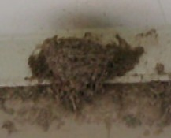

世の中のペット好きにはイヌ派とネコ派がある。女房はイヌ派でネコが大キライ。σ(-_-)は どっちでもない、というか どっちも好き（子供の時はネコ飼ってたし）。しかし３年前からネコがだいぶんキライになった。(>_<；
σ(-_-)は周りが田ン甫や畑の田舎市に住んでいるので、４月になるとツバメが飛んできて そこかしこで営巣する。それなりに民家はたくさんあっても、ツバメが営巣する家は多くない。それに毎年同じ家に営巣するので、営巣にピッタリの環境だと思っても、新規に選ばれることは少ない。子供の頃から（我が家にツバメがこないかな）と思っていたが、そうはイカのキン○マ。
ところが10年ほど前、そんな我が家の駐車場の天井に近い壁が おツバメさまの巣に選ばれた。もううれしくて、これまにツバメ話を何度も書いた（いま読み返すと、同じような話を何度も書いている(^-^；）。ところが忘れもしない３年前、その巣が野良ネコに襲われた。
普通ならネコがジャンプしたって届く高さではない。しかしその年、巣の下側に長男が小さなベニヤ板を水平にとりつけた。子ツバメが大きくなると、盛んにフンをする。それがフン爆弾となって車の屋根におちる。σ(-_-)は屋根に毛布をおいてフンよけをしていたが、それよりこの方が手間が省けるというので、フン受けにベニヤを取り付けたもの。
ガムテープで軽くとりつけただけなので、少し力をいれれば外れてしまう。しかしフン受けだけなら問題はない。車を停めるたあと、毎回 毛布掛けをする必要もない。σ(-_-)も（なるほろ、これはいい）と思った。しかし野良ネコも、そう思った。(ノд｀)
いままでは車の屋根からジャンプして 何とか巣に手が届いたとしても、足場がない。足場がなければ落ちるしかない。落ちれば、いかにネコが身軽でもケガをする可能性大。そこでネコも悔しそうに巣を見上げるだけで、襲うことはなかった。そこへベニヤ板ができた。ネコが体重をかければ落ちてしま強度しかないが、ネコには分からない。それにベニヤまでなら、大ジャンプすれば届きそう。そこで或る晩、ネコが襲った。
大ジャンプしてベニヤに体重がかかった瞬間、ベニヤが斜めになって落ちはじめた。必死になって前足を巣にかけたが巣は泥造り。ベニヤも巣もネコと一緒に床に落ちた。
なにごとかとσ(-_-)が見に行ったとき、親スズメはもとよりネコの姿もなかったが、床には打ちつけられた子ツバメの死体....その年の子育ては、それで終わった。それ以来、ネコがキライになった。
翌年、去年のことがあったにしてもツバメの飛来を心待ちにしていた。しかしツバメはこなかった。その翌年も....
ところが今年（５月のはじめころ）、ツバメが２羽飛来した。なんだか元あった巣のあたりを飛び回っている。同じツバメかむかしの子ツバメか分からないが、期待していたら巣を造り出した。２週間ほどかかって立派な巣ができた。

いまではタマゴも産まれたようで、必ず１羽が巣の中にいる。当時の野良ネコは今はいないが、別なネコがウロウロしている。二度と襲われないように注意しなくては....
|